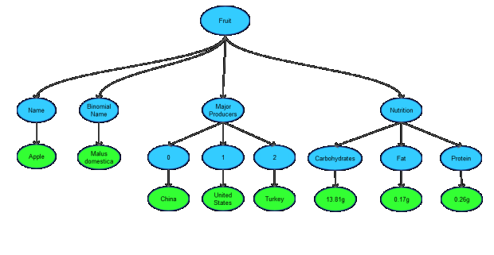

Converting Nested JSON to CSV
Last Updated: 10 January, 2021 | First Published: 8 December, 2013
The first time I came across JSON, I was really happy. It is a very light and fluffy object representation in plain text. The beauty was that there were no new or extra specs; existing concepts of lists, objects, strings, numbers etc. were taken and put together in it's own clean way. I use JSON widely when I am working with APIs. In my playbook it is second only to single word/number replies.
Apart from becoming a standard for data interchange between clients and server calls, JSON has also become popular for intermediate representation and storage of data. This is pretty evident when working with reporting tools and frameworks. Why I say intermediate is because, the origin might be some XML or data from some DB and the actual consumption format might be some chart, graph or CSV data.
JSON allows expression of hierarchical, well formed and structured data by nesting objects and arrays within one another up to multiple nesting levels. Often, this sort of representation is not very easy or almost impossible to express in row/cols based data structures like CSV. However, when you talk about reporting and making dashboards it is almost always required to convert such structured data to more flatter key/value data for interpretation and exporting. This interpretation allows data analysts to import the data into tools like excel and work with it.
Here I am going to discuss about converting multiple nested JSON which might or might not contain similar elements to CSV for usage with tools like excel or open office calc. The script is written in Python2.7.
Let's take a valid multi-level JSON and start off...
{
"fruit":[
{
"name":"Apple",
"binomial name":"Malus domestica",
"major_producers":[
"China",
"United States",
"Turkey"
],
"nutrition":{
"carbohydrates":"13.81g",
"fat":"0.17g",
"protein":"0.26g"
}
},
{
"name":"Orange",
"binomial name":"Citrus x sinensis",
"major_producers":[
"Brazil",
"United States",
"India"
],
"nutrition":{
"carbohydrates":"11.75g",
"fat":"0.12g",
"protein":"0.94g"
}
},
{
"name":"Mango",
"binomial name":"Mangifera indica",
"major_producers":[
"India",
"China",
"Thailand"
],
"nutrition":{
"carbohydrates":"15g",
"fat":"0.38g",
"protein":"0.82g"
}
}
]
}
This is a valid JSON of 3 Fruit objects. Each fruit object has multiple valid data structures nested within.
Each object has to be parsed individually and reduced to a more flatter structure before putting it back together and writing it as a CSV. This is also essential for determining the headers. A few key things for doing this are...
Deducing key/value pairs for each object
I've visualized this structure as a tree and then the key and value is decided as follows...
Value: This is the leaf node.
Key: This is the concatenation of all parent node names with an '_' as separator. In case of Arrays, the immediate parent of the value is the index.
Taking the Apple object as example the tree can be visualized as... 
Therefore, the key/value pairs become Fruit_Name -> Apple, Fruit_Major Producers_0 -> China and so on. The same thing is done for all Fruit objects. Here the array indices are ignored. Otherwise it would be Fruit_0_Name -> Apple as against Fruit_Name -> Apple.
After this exercise we will be left with a flat set of the required key/value pairs derived from the original JSON object. Same thing has to be done for all the objects in the original data to obtain reduced data.
Determining Headers
The headers are decided by adding all keys of all objects together and removing duplicates among them. This will ensure that all the keys across objects are covered. Further, headers are sorted alphabetically so that all the similar keys stay next to each other making it easier to read the CSV file. However, this also means that the original ordering of the JSON is not maintained. This is a current limitation, I am working on this and will update when I fix this.
Some key/value pair(s) existing in one object may not be present in another object. In this situation, the value will be empty wherever the key does not exist.
I am also working on writing multi-row, pretty headers without the '_'. If done, this can make reading and using this CSV even more easier. This will also enable usage of Merge and Center functionality of excel and allow for easier filter/formula application.
Writing the CSV
Finally, after reducing all original objects to flat objects as discussed above, the headers are written followed by every object as a row. the csv.DictWriter is used to write the CSV which will ensure that the rows are written as per the header and in the same order.
All code is available at Github. I am yet to setup an online demo where you can upload a JSON file and get a CSV for download. Will update once this is live.
Let me know if you have any suggestions or come across any bugs in the code.